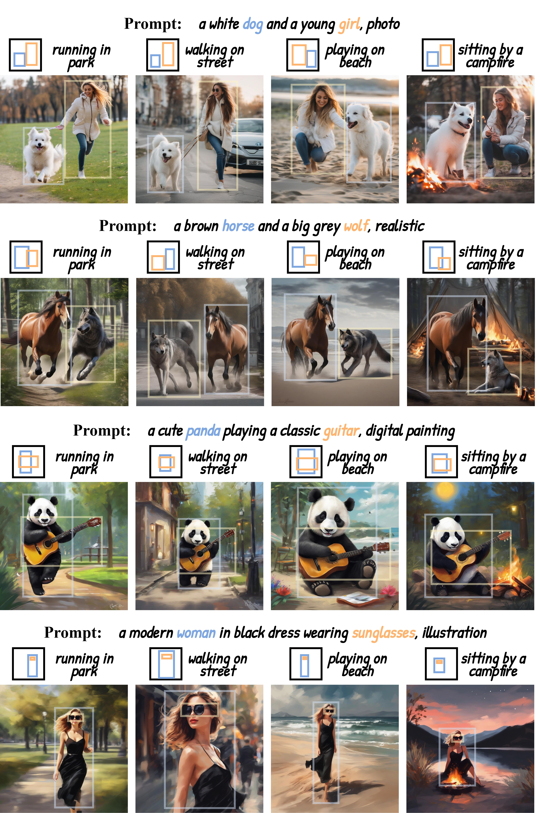

Abstract
Text-to-image diffusion models benefit artists with high-quality image generation. Yet their stochastic nature hinders artists from creating consistent images of the same subject. For this issue, we propose a novel one-shot tuning paradigm, termed as OneActor. It efficiently performs consistent subject generation solely driven by prompts via a learned semantic guidance to bypass the laborious backbone tuning. We lead the way to formalize the objective of consistent subject generation from a clustering perspective, and thus design a cluster-conditioned model. To mitigate the overfitting challenge shared by one-shot tuning pipelines, we augment the tuning with auxiliary samples and devise two inference strategies: semantic interpolation and cluster guidance. These techniques are later verified to significantly enhance the generation quality. Comprehensive experiments show that our method outperforms a variety of baselines with satisfactory subject consistency, superior prompt conformity as well as high image quality. Our method is capable of multi-subject generation and compatible with popular diffusion extensions. Besides, we achieve a 4 times faster tuning speed than tuning-based baselines and, if desired, avoid increasing inference time.
Performance
Single Subject Generation


Multiple Subjects Generation

Application
Storybook Creation

Style Transfer

Pose Control

BibTeX
@article{wang2024oneactor,
title={OneActor: Consistent Character Generation via Cluster-Conditioned Guidance},
author={Wang, Jiahao and Yan, Caixia and Lin, Haonan and Zhang, Weizhan},
journal={Advances in Neural Information Processing Systems},
year={2024}
}